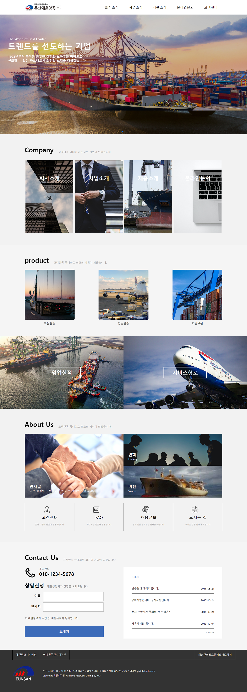

은산해운항공
Web Page RedesignPublising
- PC
- 1280px Chrome
- 기여도
- 개인작업 (100%)
About
- #웹표준
- #반응형
- #시멘틱마크업
- #Javascript
- #Sipwer_js
- #mobileFirst
Goal
HTML5 구조이해 및 css3 적용에 중점을 두고 작업
main image slide를 위한 Swiper 적용
Problems
& Solution
" 전체적인 layout "
flex와 grid 속성의 특성을 먼저 이해한 다음, contents layout 구조 설계에 적용.
" header menu dropdown "
header menu hover 시 sub menu 나타내기 위해 position 속성을 이용하여 자연스러운 모션을 구현함.
" image hover 시 설명 overlay "
position과 opacity 속성을 이용하여 overlay 효과 구현
" main image slide "
main image에 자연스러운 image slide 효과를 위해 Swiper js 적용
Style Guide
keyword
- # 심플한
- # 스마트한
- # 보기 쉬운
Font
-
Noto Sans KRBold
가나다 ABC -
Noto Sans KRRegular
가나다 ABC
Color
-
#333333
-
#F2F2F2
Preview

review
-
# 강점
여러번의 수정을 통해 Flex와 Grid 속성을 이해하고 나니 contents의 정렬은 어렵지않게 작성할 수 있었다.
-
# 약점
화면에 보여지는 부분을 중점적으로 작업을 하였기 때문에 시멘틱마크업 작업이 부족하였다.
또한 공통으로 쓰이는 요소들의 작성 요령과 알아보기 쉬운 id와 class명 설정에 더욱 신경을 써야할 것 같다. -
# 총평
처음엔 아무것도 없는 흰 화면을 채워나가기가 막막했다.
하나하나 section을 구분하고 구조를 작성했다 지웠다를 반복하며 화면이 점점 채워지는 것을 보고 재미를 느끼게 되었다.
같은 레이아웃이라도 컨텐츠가 바뀌면 느낌이 완전히 달라지는 디자인과 그에 따른 퍼블리싱이 정말 쉽지 않았지만 완성된 결과물은 정말 뿌듯하고 더 잘 할 수 있는 자신감이 생겼다.